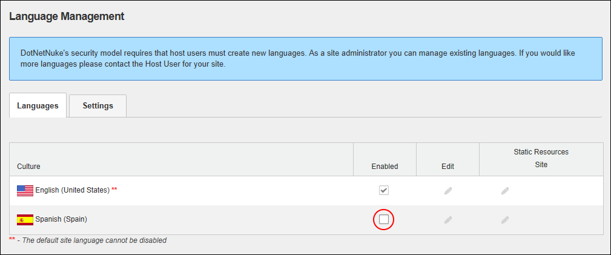

How to enable or disable a language on your site using the Languages module. A site can be enabled or disabled before or after content localization is enabled. DNN Platform users (including anonymous users) must be granted Edit Module permissions. Evoq Content users (including anonymous users) must be granted Edit Content permissions.

Tip: Once two or more languages are enabled on a site, users can set their preferred language on their user profile and different settings can be configured for each language using the Site Settings page.